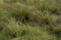
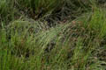
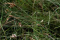
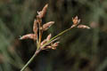
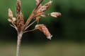
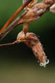
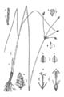

Diagnostic characters
Botany & morphology
Regeneration
Reproductive biology
Ecology
Distribution
Leafy glabrous herb in large clumps, perennial with creeping rhizome. Spikelets densely many-flowered, brown or yellow. Fruit nut, yellow in color.
Leaves blade narrow linear, 5-6 cm long, wide above the base.
Umbel with 5 - 10 spikelets.
Spikelets lance-ovate or lance-elliptic, terete, densely many flowered, brownish, subacute at base, gradually tapering above to acute apex; glumes boat shaped with subacute keel, ferruginous-brown; achenes broadly obovate; style 3, flattened, stigma 2, stamens 3.
Fruit nut, yellow in color, broadly obovoid, shortly stalked, and smooth.
Roots fibrous, stems subangular or slightly flattened.
Epigeal germination.
Wind pollinated.
Abundant near sea. Also, found in brackish and fresh water open swamps at low altitudes.
Pantropic.
Top of the page